Proximité
Un interlocuteur local et une intervention organisée selon votre site.
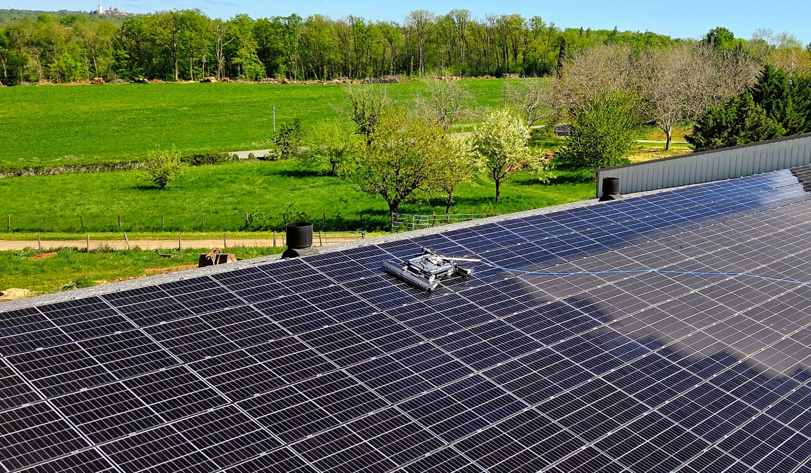
Aveyron & départements voisins
Pour exploitations agricoles, bâtiments industriels et tertiaires, grandes installations photovoltaïques et particuliers.
Pourquoi nous choisir ?
Une approche simple, du matériel professionnel et une connaissance concrète du photovoltaïque.
Un interlocuteur local et une intervention organisée selon votre site.
Robot, brosses et solutions adaptées aux petites comme aux grandes surfaces.
Commune, puissance ou surface approximative et quelques photos suffisent souvent pour une première estimation.
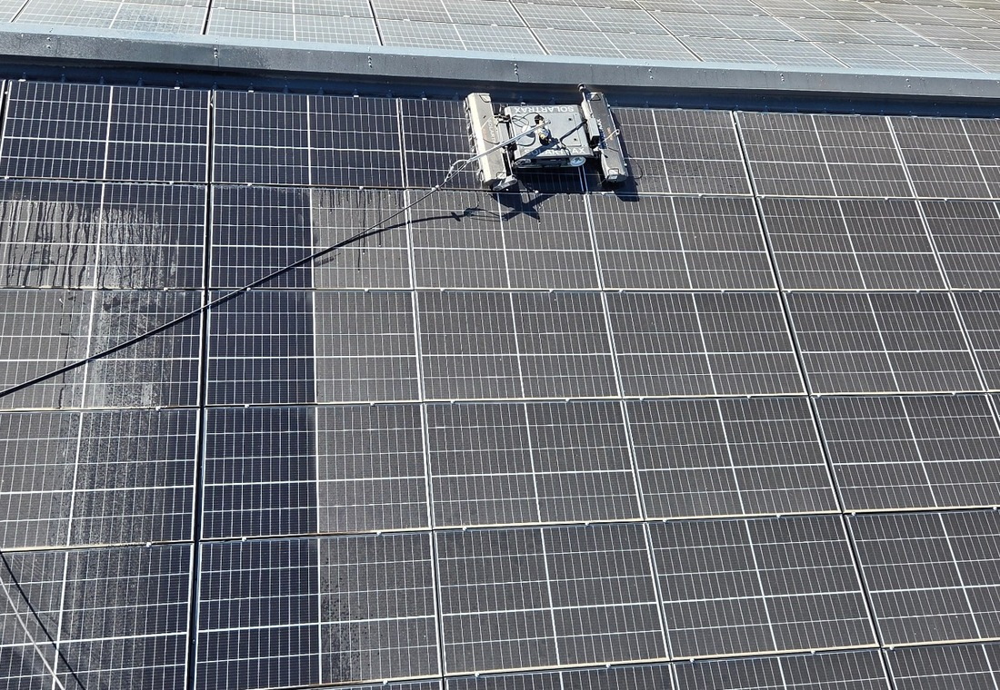
Interventions
Nous adaptons la méthode au bâtiment, à l’accès, à la pente et à la surface à traiter.
Grandes toitures, poussières, pollens et environnement agricole.
Interventions organisées pour les surfaces professionnelles et les accès spécifiques.
Commerces, ateliers, entrepôts et autres bâtiments équipés de photovoltaïque.
Une solution adaptée aux installations de plus petite taille.
Organisation du chantier et matériel choisis en fonction de la configuration réelle du site.
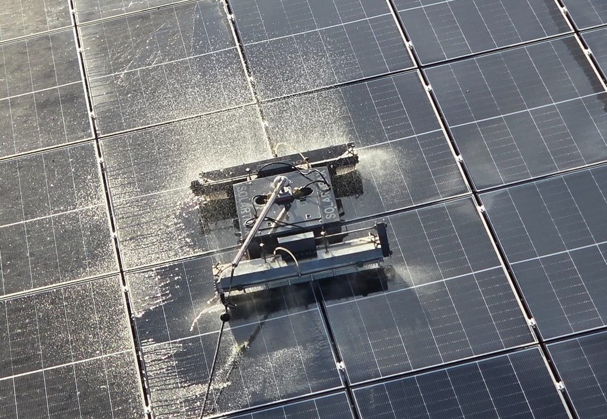
Résultat visible pendant l’interventionPourquoi nettoyer ?
Poussières, pollens, fientes et dépôts liés à l’environnement peuvent s’accumuler sur les modules. Selon l’inclinaison et l’exposition, la pluie ne suffit pas toujours à les éliminer.
Nous intervenons lorsque l’état de l’installation le justifie, avec une méthode adaptée au site et au niveau d’encrassement.
Zone d’intervention
Basés à Sainte-Croix, nous nous déplaçons dans ces six départements pour les installations agricoles, professionnelles et résidentielles.
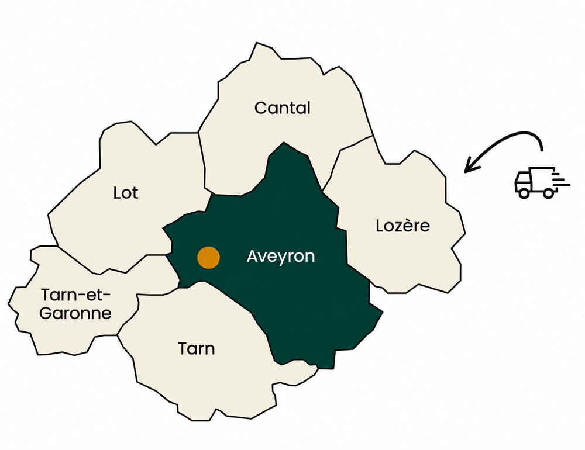
Réalisations
De vraies interventions, sur des toitures et configurations différentes.
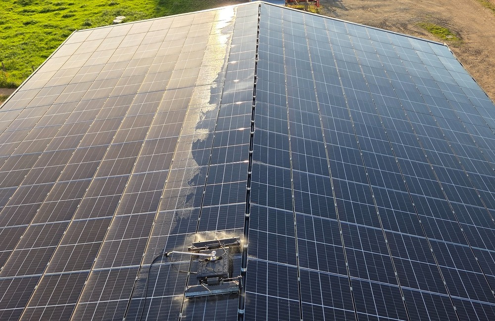
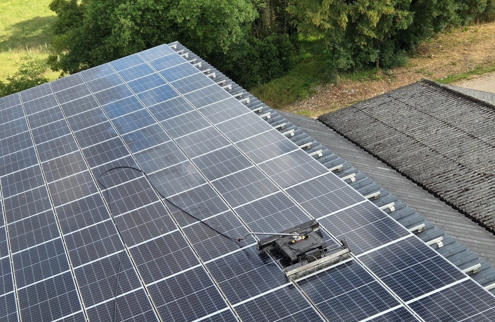
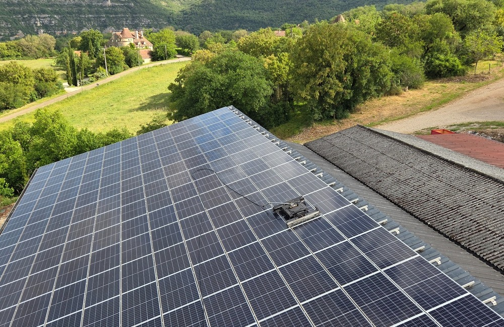
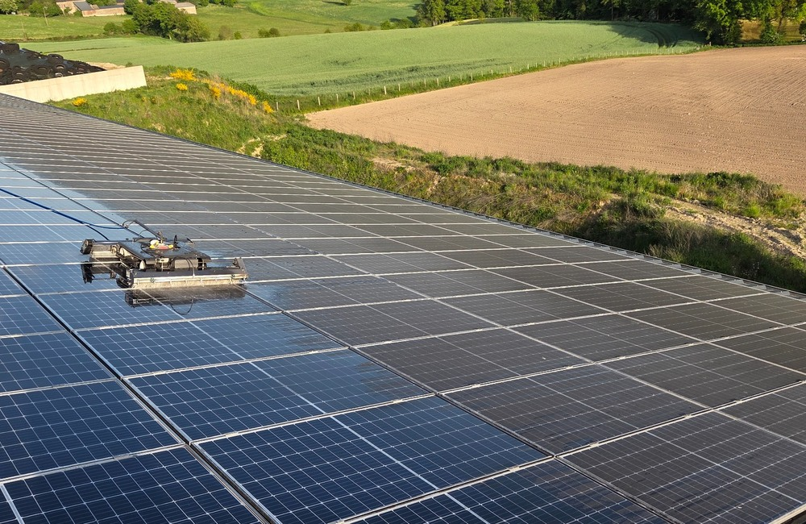
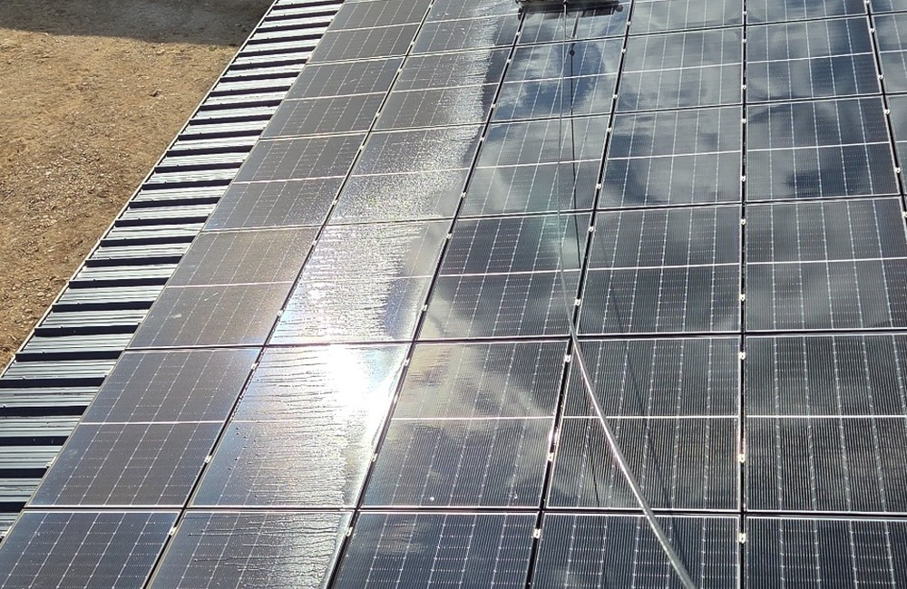
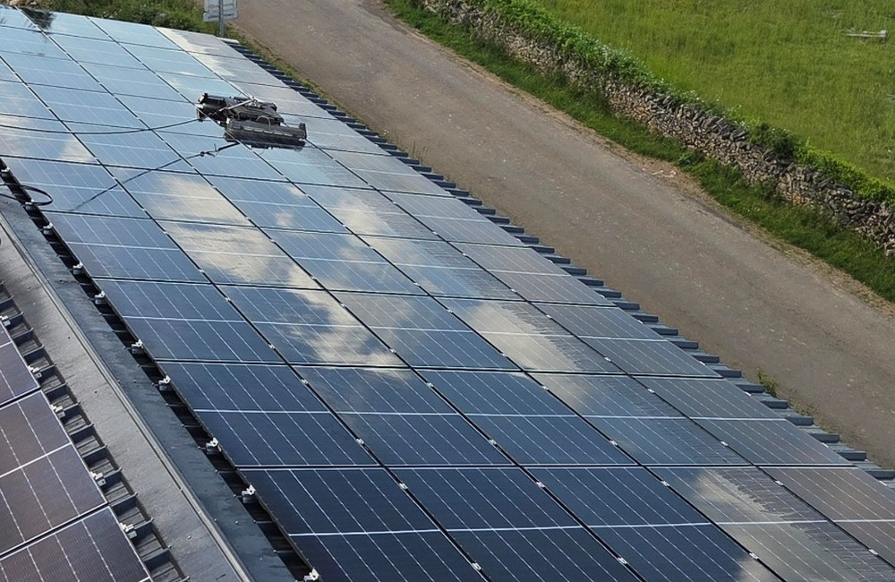
Expérience terrain
Cette expérience nous donne une lecture très concrète des enjeux de production, d’entretien, d’accès et de rentabilité d’une intervention.
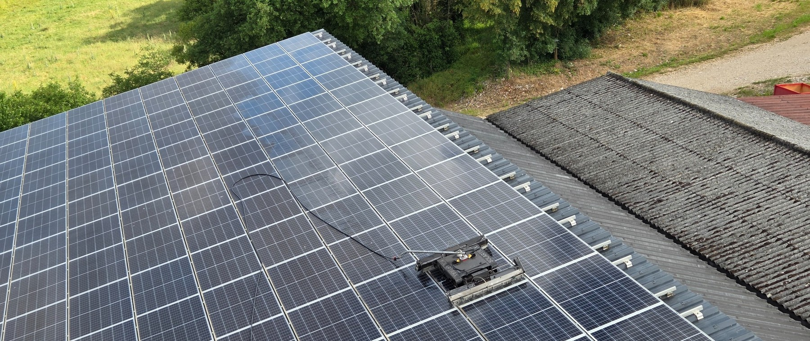
Devis
Commune, puissance ou surface approximative, quelques photos et un numéro de téléphone suffisent pour commencer.